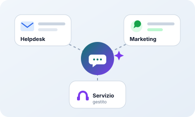
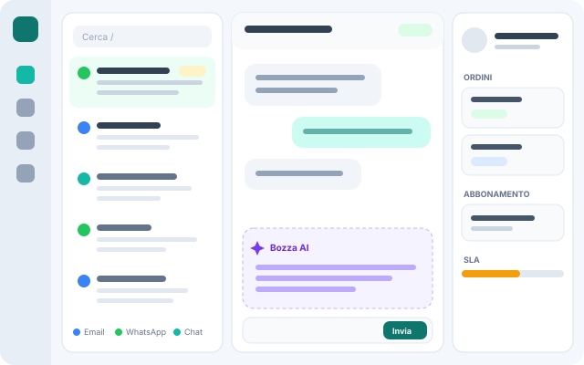
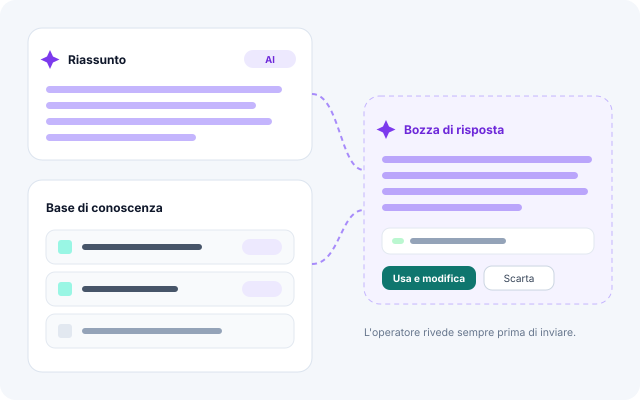
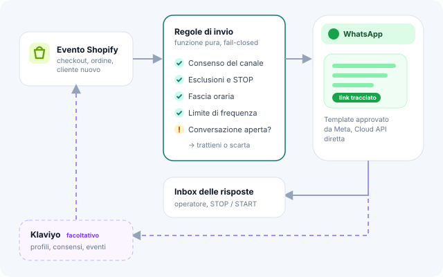
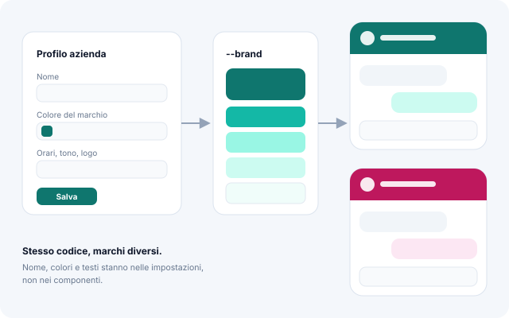

L'inbox per l'assistenza
Conversazioni da email, WhatsApp e chat del sito in un'unica coda, con il contesto del cliente (ordini e abbonamenti da Shopify), bozze dell'AI, macro, SLA e Help Center.
Care è una piccola suite per i brand che vendono online: un helpdesk che riunisce email, WhatsApp, chat del sito e Help Center con l'AI accanto all'operatore, un'app di WhatsApp marketing per Shopify e un servizio gestito per chi vuole il risultato senza occuparsi dello strumento.

Prima è nato l'helpdesk; il marketing su WhatsApp è diventato un'app a sé; il servizio gestito è il modo più diretto per portare tutto questo ai brand. Codice e documenti sono separati, ma condividono le stesse regole di sicurezza e lo stesso design system.
Conversazioni da email, WhatsApp e chat del sito in un'unica coda, con il contesto del cliente (ordini e abbonamenti da Shopify), bozze dell'AI, macro, SLA e Help Center.
Template, campagne a segmenti e flussi automatici (benvenuto, carrello abbandonato, dopo l'acquisto) mossi dagli eventi del negozio. Klaviyo si collega, ma non serve.
Un servizio gestito: configuro e mantengo per il brand l'assistenza su WhatsApp con l'AI, sui suoi account. Oggi è in fase di validazione con i primi colloqui.
Un ticket si capisce senza aprirlo: canale, priorità, SLA di prima risposta e anteprima sono già in lista. Accanto alla conversazione c'è il pannello del cliente con ordini e abbonamenti, così l'operatore non deve aprire altri strumenti.

illustrazione · inboxCon la Claude API l'helpdesk propone bozze di risposta, riassume le conversazioni lunghe e attinge a una base di conoscenza propria del brand. Tutto ciò che viene dall'AI ha un colore dedicato nell'interfaccia, così è sempre chiaro chi ha scritto cosa.

illustrazione · AICare Marketing usa direttamente la WhatsApp Cloud API. Gli eventi di Shopify (ordini, checkout, clienti) muovono flussi e segmenti; prima di ogni invio una funzione pura controlla consenso, esclusioni, fascia oraria e frequenza, e trattiene il messaggio se il cliente sta già parlando con un operatore o ha appena ordinato.

illustrazione · flussoNome, colori, logo, orari e testi del brand stanno nel «Profilo azienda», non nel codice: un solo colore di marchio genera tutta la palette, e un test verifica che nel prodotto non resti il marchio di nessun cliente. Il widget della chat si personalizza da interfaccia con un'anteprima fedele.

illustrazione · white labelUn helpdesk tocca dati di clienti e parla a nome di un brand: le scelte di base sono tutte dalla parte della prudenza.
Nessun messaggio parte finché gli invii non vengono accesi in modo esplicito; in modalità ombra il sistema lavora e prepara le risposte senza mandarle.
Credenziali delle integrazioni cifrate con AES-256-GCM, export e cancellazione dei dati del cliente finale, perimetro pubblico ridotto a poche rotte coperte da test.
Lavori in background (invii, webhook) in una coda svolta da un worker separato, webhook Shopify verificati con HMAC, backup e ripristino provati su dati finti.
Un monolite ordinato: frontend React compilato e servito dal backend FastAPI, database relazionale tramite SQLAlchemy, worker per i lavori lunghi e integrazioni dirette con le API dei servizi che i brand usano già.
La suite è un mio progetto personale e il codice non è pubblico. Le immagini di questa pagina sono illustrazioni schematiche, non screenshot: se vuoi vederla funzionare, scrivimi e te la mostro.
Una demo con dati di prova vale più di mille illustrazioni.